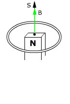

Tomamos el vector
superficie de la espira hacia arriba

La
espira tiene flujo positivo
Al alejar
el imán disminuirá el campo en la posición
que ocupa la espira y por tanto disminuirá el flujo positivo
Para compensar la disminución de flujo positivo se tendrá
que crear flujo positivo. Para producirlo tendrá que aparecer
un campo adicional B' en la dirección del vector superficie
Para que
aparezca un campo con la dirección de B' la corriente inducida
I' tendrá que circular en sentido contrario al de las agujas
del reloj